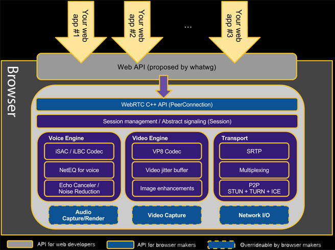

Legend:
( Press 'n' for additional notes on some slides. Some of this presentation requires Chrome 18+. )
Who?

 @ ebidel
@ ebidel
Blog: ericbidelman.com
Agenda
- Multimedia Helpers
- Media Capture
- Web RTC
- Web Audio API
Multimedia Helpers
Using cross origin media
- Some HTML elements (
img,video) have acrossoriginattribute (.crossOriginproperty in JS) to indicate that the resource should be fetched with a CORS request. - Allows cross-domain images to be read by WebGL and
<canvas>withoutSECURITY_ERR.
var img = document.createElement('img');
img.onload = function(e) {
ctx.drawImage(img, 0, 0, canvas.width, canvas.height);
var url = canvas.toDataURL(); // Succeeds. Canvas won't be dirty.
};
img.crossOrigin = 'anonymous'; // or 'use-credentials'
img.src = 'http://other-domain.com/image.jpg';
Demo
Page Visibility API
Determine if your media is visible or not:
document.addEventListener('visibilitychange', function(e) {
console.log('hidden:' + document.hidden,
'state:' + document.visibilityState)
}, false);
requestAnimationFrame - Smarter animations
Common technique for JS animations:
window.setTimeout(function() {
// move element. Call this again.
}, 1000 / 60); // 60fps.
Preferred technique:
window.requestAnimationFrame = window.webkitRequestAnimationFrame ||
window.mozRequestAnimationFrame || window.msRequestAnimationFrame;
var reqId_ = null;
(function callback(time) { // time is the Unix time.
// move element.
reqId_ = window.requestAnimationFrame(callback, opt_elem /* bounding elem */);
})();
- Now possible to synchronize JS-based animations with CSS/SVG animations
- Chrome caps sampling at 60fps (no big, your monitor is ~60Hz)
- Callback won't be invoked if tab/element is not visible (
display:none) - Tells the browser your intentions are to animate something
Example
function draw() {
var now = new Date().getTime();
// update models.
paintScene(canvas);
window.setTimeout(draw, 10);
}
draw();
function draw(time) {
// update models.
paintScene(canvas);
window.requestAnimationFrame(draw, canvas);
}
draw();
Media Fragment URIs
- Specify the portion of the <audio> or <video > to play.
- Supposedly implemented in FF and WebKit nightlies.
<!-- Play the range 10 seconds through 20 seconds. --> <video src="http://foo.com/video.ogg#t=10,20"></video> <!-- Play from the beginning through 10.5 seconds. --> <video src="http://foo.com/video.ogg#t=,10.5"></video> <!-- Play from the beginning through two hours. --> <video src="http://foo.com/video.ogg#t=,02:00:00"></video> <!-- Start playing at 60s, through to end. --> <video src="http://foo.com/video.ogg#t=60,"></video>
See MDN Documentation for more info.
Video subtitles using <track>
Subtitles are created in the WebVTT format.
<video width="390" id="clip" controls>
<source src="movie.webm" type='video/webm; codecs="vp8, vorbis"' />
<track kind="subtitles" src="subtitles-en.vtt" srclang="en"
label="English subtitles" default />
<track kind="captions" src="brave.en.vtt" srclang="en"
label="English for the Hard of Hearing">
</video>
<track> ( JS API )
Information on each TextTrack:
var track = video.textTracks[0];
track.mode = TextTrack.HIDDEN; // Hide, show (SHOWING), or disable (DISABLE) track.
track.oncuechange = function(e) {
...
};
Information on each TextTrackCue:
var allCues = track.cues; (TextTrackCueList)
var activeCue = track.activeCues[0]; (TextTrackCue)
activeCue.id (DOMString)
activeCue.startTime (bool)
activeCue.endTime (bool)
activeCue.pauseOnExit (bool)
activeCue.text (DOMString)
activeCue.getCueAsHTML(); (DocumentFragment)
activeCue.onenter = function(e) { ... };
activeCue.onexit = function(e) { ... };
Not just for video
Play scheduled portions of a given audio file:
var sfx = new Audio('sfx.wav');
var track = sfx.addTextTrack('metadata');
// Add cues for sounds we care about.
track.addCue(
new TextTrackCue('dog bark', 12.783, 13.612, '', '', '', true));
track.addCue(
new TextTrackCue('kitten mew', 13.612, 15.091, '', '', '', true));
function playSound(id) {
sfx.currentTime = track.getCueById(id).startTime;
sfx.play();
}
playSound('dog bark');
playSound('kitten mew');
Media Source API - "Streaming"
Extends HTMLMediaElement by allowing JavaScript to append media for playback.
video.src = video.webkitMediaSourceURL;opens the stream.video.webkitSourceAppend(new Uint8Array(arrayBuffer));appends data.video.webkitSourceEndOfStream(HTMLMediaElement.EOS_NO_ERROR)signals end of stream (no errors).video.webkitSourceStatestatus indicates state of stream (HTMLMediaElement.SOURCE_CLOSED=0,HTMLMediaElement.SOURCE_OPEN=1,HTMLMediaElement.SOURCE_ENDED=2).webkitsourceopenandwebkitsourceendedevents fire on start and end of stream.- Only
.webmcontainer is supported for now.
See HTML5Rocks Update for more info.
Or Segmenting WebM Video and the MediaSource API
Example
var video = document.querySelector('video');
video.src = video.webkitMediaSourceURL;
video.addEventListener('webkitsourceopen', function(e) {
while(!isLastChunk) {
video.webkitSourceAppend(new Uint8Array(arrayBuffer));
...
}
video.webkitSourceEndOfStream(HTMLMediaElement.EOS_NO_ERROR);
}, false);
video.addEventListener('webkitsourceended', function(e) {
console.log(video.webkitSourceState ==
HTMLMediaElement.SOURCE_CLOSED);
}, false);
Demos
First step to speech enabled apps
<input type="text" x-webkit-speech>
input.addEventListener('webkitspeechchange', function(e) {
if (e.results) { // e.type == 'webkitspeechchange'
for (var i = 0, result; result = e.results[i]; ++i) {
console.log(result.utterance, result.confidence);
}
}
}, false);
See new Speech JavaScript API unofficial specification.
Camera & microphone access - the real deal
Plugin-free acess to camera/microphone.
<video autoplay controls></video>
navigator.getUserMedia({audio: true, video: true}, function(s) {
var video = document.querySelector('video');
video.src = window.URL.createObjectURL(s);
}, function(e) {
console.log(e);
});
Demos
Recording your hard work
<input type="button" value="⚫" onclick="record(this)"> <input type="button" value="◼" onclick="stop(this)">
var localMediaStream, recorder;
var record = function(button) {
recorder = localMediaStream.record();
};
var stop = function(button) {
localMediaStream.stop();
recorder.getRecordedData(function(blob) {
// Upload blob using XHR2.
});
};
Fullscreen - let the content take over
<video width="300" src="movie.webm" controls></video> <button onclick="enterFullscreen()">Get Huge!</button>
function enterFullscreen() {
var elem = document.querySelector('body');
elem.onwebkitfullscreenchange = function(e) {
console.log("Entered fullscreen!");
elem.onwebkitfullscreenchange = onFullscreenExit;
};
elem.webkitRequestFullScreen(Element.ALLOW_KEYBOARD_INPUT);
}
Fullscreen API ( JS )
Control of the entire document and elements:
document.webkitIsFullScreen ( bool ) document.webkitCurrentFullScreenElement ( DOMElement ) document.webkitFullScreenKeyboardInputAllowed ( bool ) document.webkitCancelFullScreen();
Element.webkitRequestFullScreen(Element.ALLOW_KEYBOARD_INPUT);
Fullscreen API ( non-standard )
WebKit has extra stuff for media elements:
HTMLMediaElement.webkitSupportsFullscreen ( bool ) HTMLMediaElement.webkitDisplayingFullscreen ( bool ) HTMLMediaElement.webkitEnterFullScreen() HTMLMediaElement.webkitExitFullScreen()
Fullscreen API
New CSS pseudo-classes:
:-webkit-full-screen:-webkit-full-screen-document:-webkit-full-screen-root-with-target
iframed content needs special treatment by the parent page:
<iframe src="..." webkitallowfullscreen></iframe>
Web RTC
What's the problem?
The demand for RTC is real!


...all browser based. All requiring a special download or Flash
What is WebRTC?
high quality real-time voice/video communication in the browser
- Browser engine:
- Echo cancellation, noise reduction, automatic gain control
- Network jitter management
- Web APIs:
- Audio/video capture and playback
- Device management
- WebRTC 1.0: Real-time Communication Between Browsers spec
Architecture

Example
function onSignalingMsg(msg, source) {
// send message to the other side via the signaling channel.
pc.processSignalingMessage(msg);
}
var pc = new PeerConnection('STUN example.com:8000', onSignalingMsg);
pc.onaddstream = function(e) {
remoteVideo.src = window.URL.createObjectURL(e.stream);
};
pc.onremovestream = function(e) {
remoteVideo.src = '';
};
navigator.getUserMedia('video,audio', function(localStream) {
localVideo.src = window.URL.createObjectURL(stream);
pc.addStream(localStream); // Start sending video.
}, function(e) { ... });
Build the future...

- Break the "dial" paradigm
- Build really social networks
- Build interactive commerce
- Build amazing online learning experiences
- Online gaming
- Build cool baby monitors
- Robots!!
Community effort
- webrtc.org
- code.webrtc.org - open-source, royalty free BSD license
- Mozilla, Opera, Google, and others supporting the effort
Web Audio API
In the olden days...
<bgsound="xfiles.mid" controls="console" loop="5">
<!-- Autostart! Yay! -->
<embed src="hamsterdance.wav" autostart="true"
loop="true" hidden="true">
<noembed>
<bgsound src="hamsterdance.wav">
</noembed>
.... and of course embedded flash
Now web have HTML5 <audio>...what gives?
- Yes :)...but <audio> can only take us so far
- Codec support issues
- Simple low-latency, glitch-free, audio playback and scheduling
- Real-time processing and analysis
- Low-level audio manipulation
- Effects: spatial panning, low/high pass filters, convolution, gain, ...
Comparison to Mozilla's Audio Data API
- Similarities:
- Extends the <audio> element
- Generate audio
- Load + manipulate sound files
- Differences:
- FF intensive audio processing operations must be done in JS (slow). Web Audio API exposes calls for common effects/operations under the covers.
- Nodes are created + hooked up to produce overall audio system.
Scheduled playback
var ctx = new webkitAudioContext();
function playSound(arrayBuffer) { // Obtain arrayBuffer from XHR2.
ctx.decodeAudioData(arrayBuffer, function(buffer) {
var src = ctx.createBufferSource();
src.buffer = buffer;
src.loop = false;
src.connect(ctx.destination);
src.noteOn(0); // Play immediately.
}, function(e) {
console.log(e);
});
}
Shoot:
Sample-accurate scheduling
function playSound(buffer, time) {
var source = context.createBufferSource();
source.buffer = buffer;
source.connect(context.destination);
source.noteOn(time);
}
// Play the bass (kick) drum on beats 1, 5
playSound(kick, time);
playSound(kick, time + 4 * eighthNoteTime);
// Play the snare drum on beats 3, 7
playSound(snare, time + 2 * eighthNoteTime);
playSound(snare, time + 6 * eighthNoteTime);
// Play the hi-hat every eighth note.
for (var i = 0; i < 8; ++i) {
playSound(hihat, time + i * eighthNoteTime);
}

Bohemian Rhapsichord
DemoGain Control - Cross Fade
var source = context.createBufferSource(); var gainNode = context.createGainNode(); source.buffer = buffer; source.connect(gainNode); gainNode.connect(context.destination);
Drums Organ
Generating sound
var sine = new Oscillator(DSP.SINE, 440, 1.0, 2048, 44100).generate(); // dsp.js var src = ctx.createBufferSource(); src.buffer = ctx.createBuffer(1 /*channels*/, 2048, 44100); src.buffer.getChannelData(0).set(sine); src.loop = true; src.connect(ctx.destination); src.noteOn(0);
Sound Toy
DemoRealtime Audio processing
var ctx = new webkitAudioContext();
var analyser = ctx.createAnalyser();
function initAudio(arrayBuffer) {
ctx.decodeAudioData(arrayBuffer, function(buffer) {
var src = ctx.createBufferSource();
src.buffer = buffer;
src.connect(analyser); // src -> analyser -> destination
analyser.connect(ctx.destination);
render(src);
}, function(e) {
console.log('Error decoding audio file', e);
});
}
function render(src) {
(function callback(timeStamp) {
var byteData = new Uint8Array(analyser.frequencyBinCount);
analyser.getByteFrequencyData(byteData);
// draw byteData to <canvas> visualization...
window.requestAnimationFrame(callback, src);
})();
}
Demos
Pre-processing ("offline") mode
Normal use of the API is to process audio in real-time. Instead, we can pre-process the audio through the entire system and get result:
var sampleRate = 44100.0;
var length = 20; // seconds
var ctx = new webkitAudioContext(2, sampleRate * length, sampleRate);
ctx.oncomplete = function(e) {
var resultAudioBuffer = e.renderedBuffer;
...
};
function convolveAudio(audioBuffer, audioBuffer2) {
var source = ctx.createBufferSource();
var convolver = ctx.createConvolver();
source.buffer = audioBuffer;
convolver.buffer = audioBuffer2;
// source -> convolver -> destination.
source.connect(convolver);
convolver.connect(ctx.destination);
source.noteOn(0);
ctx.startRendering();
}
Integration with <audio>/<video>
Using a HTMLMediaElement as the source, one can "stream" audio to the API:
var ctx = new webkitAudioContext(); var audioElement = new Audio(); audioElement.src = 'sounds/dope_beats.mp3'; audioElement.controls = true; audioElement.autoplay = true; var source = ctx.createMediaElementSource(audioElement); var analyser = ctx.createAnalyser(); source.connect(analyser); analyser.connect(ctx.destination);
Note: There's no source.noteOn(0). Play/pause is controlled by the <audio> element.